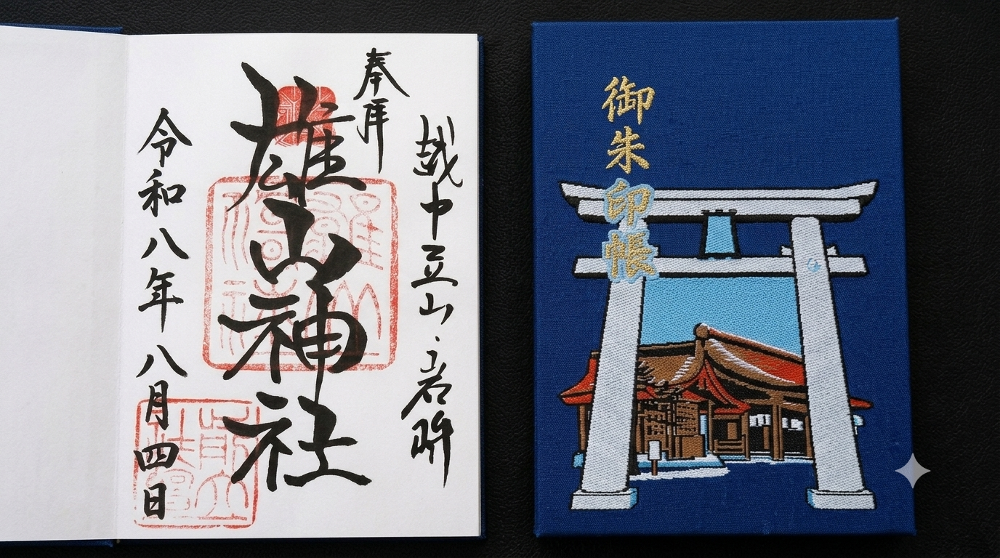
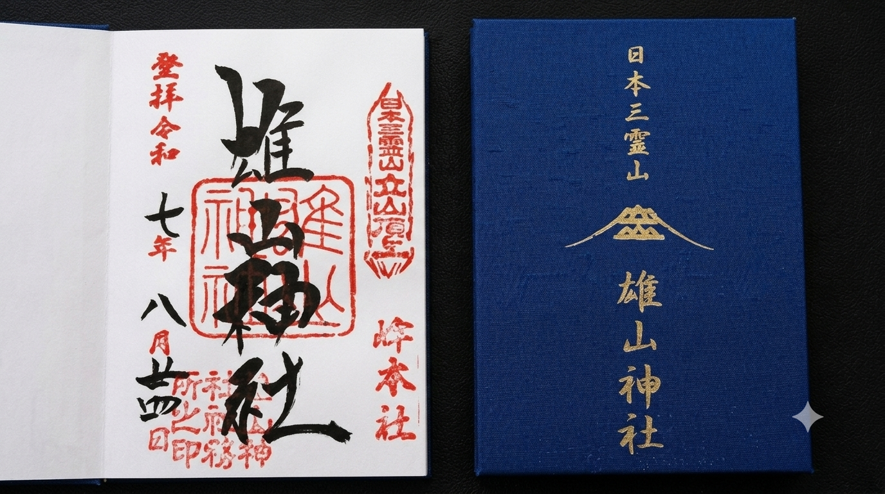

神社巡り・御朱印集め
神社巡りと御朱印集めが好きです。参拝した証としていただく御朱印は、 それぞれの神社でデザインや文字が異なり、一つひとつに個性があります。 神社の歴史や自然を感じながら巡る時間も楽しみの一つです。
好きな理由
- 神社は静かで落ち着いた雰囲気があり、参拝すると気持ちを整えることができます。
- 神社には大きな木や豊かな自然が多く、季節ごとの景色を楽しむことができます。ゆっくり歩くだけでも心が癒されます。
- 御朱印は神社ごとにデザインや文字が違い、書く人によっても雰囲気が変わります。訪れた神社が増えていくことが目に見えて分かるのも魅力です。
御朱印ギャラリー


動画で見る雄山神社
まとめ
神社巡りは、美しい景色や歴史に触れながら心を落ち着かせることができます。 そして御朱印は、その思い出を形として残せる大切な記念です。 これからもさまざまな神社を訪れ、自分だけの御朱印帳を少しずつ完成させていきたいです。